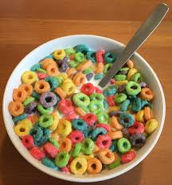

Cereal

What is it?
Cereal is a type of food. It is made of grains that are processed and often sweetened or flavored.
Ingredients
- Grains, such as wheat or rice
- Milk, such as cow's milk or almond milk
- Sugar, such as brown sugar or white sugar
- Fruits, such as strawberries or blueberries
Steps
- Place the grains in a bowl
- Pour the milk over the grains
Back to Home